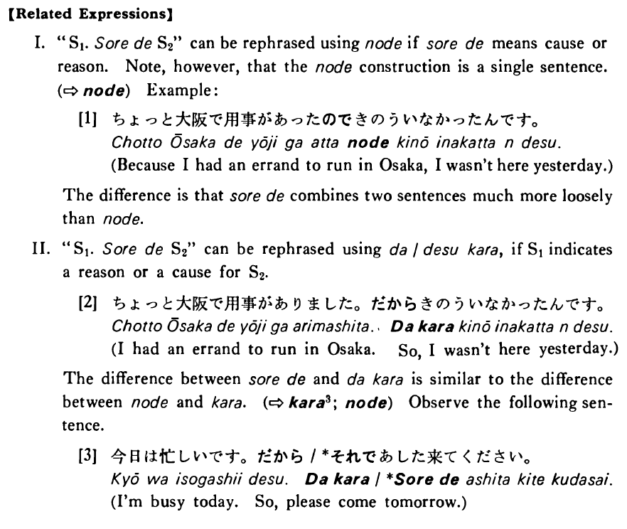

それで (B. 413)
- (ks).
- 昨日は風邪を引きました。それで学校を休んだんです。
- I had a cold yesterday. That's why I took a day off from school.
- (a).
- ちょっと大阪で用事がありました。それで昨日いなかったんです。
- I had some business in Osaka. That's why I wasn't here yesterday.
- (b).
- A:昨日はちょっと大阪で用事がありました。 B:ああ、それでいらっしゃらなかったんですね。
- A: Yesterday I had to run an errand in Osaka. B: Oh, that why you weren't here.
- (c).
- A:昨日小川君とピンポンの試合をしたんだ。 B:それで、先週新しいラケットを買ったんですね。
- A: Yesterday I played ping pong with Mr. Ogawa. B: That's why he bought a new paddle last week.
